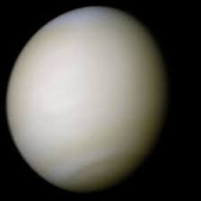

كوكب الزهرة
الزهرة هو ثاني كوكب في المجموعة الشمسية من حيث البعد عن الشمس، وهو يشبه الأرض في الحجم والتركيب ولكنه مختلف تمامًا في الظروف البيئية.

حقائق عن الزهرة
- المسافة من الشمس: حوالي 108.2 مليون كيلومتر
- القطر: حوالي 12,104 كيلومتر
- المدة الزمنية لدوران حول الشمس: حوالي 225 يومًا أرضيًا
- درجة الحرارة: تتراوح حوالي 462 درجة مئوية
النظام الشمسي